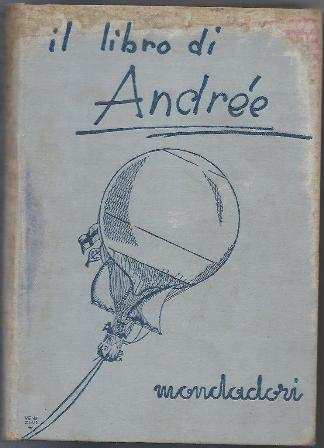
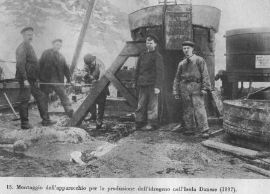
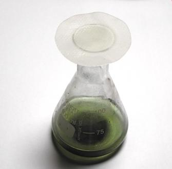
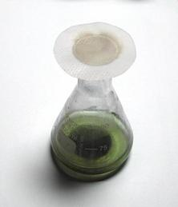
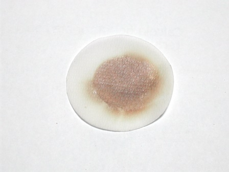

Più che sfortunata la definirei ingenua e temeraria, ma quelli erano i tempi e gli uomini e del resto tutte le prime grandi conquiste geografiche sono state assolutamente temerarie.
Sto parlando di una spedizione polare da noi poco conosciuta, di cui accennavo: la tentata conquista del Polo Nord in pallone da parte di Salomon August Andrèe nel 1897.
Visto il periodo personale in tema "profondamente nordico", ho frugato al ritorno nella mia piccola biblioteca e mi sono riletto il bellissimo libro a cura della Società di Antropologia e Geografia svedese, edito da Mondadori nel 1930.
Fu tradotto e stampato immediatamente sull'onda di quella fortunosissima scoperta che furono i resti della spedizione, rinvenuti dopo 33 anni dal disastro.

Chi fosse interessato a qualche notizia su questo avvenimento basterà che faccia le solite ricerche in rete per avere un'idea, anche se sommaria, della faccenda; quindi da parte mia la riassumo solo in due parole.
Il tecnico e scienziato svedese Salomon Andrée, accompagnato dal fisico Nils Strindberg e dall'ingegner Knut Fraenkel, tentò di raggiungere il Polo Nord ancora inviolato partendo l'11 luglio 1897 con un pallone riempito di idrogeno dall'isola dei Danesi (Danskøya) all'estremo nord delle Svalbard.
La spedizione partì subito malissimo per inconvenienti tecnici e si risolse dopo appena 480 Km percorsi in pallone con un atterraggio forzato sul pack a 82° di latitudine.
Dopo tappe massacranti sui ghiacci e sofferenze inaudite i tre naufraghi riuscirono a raggiungere in circa tre mesi la sperdutissima ed inospitale isola Kvitøya (l'Isola Bianca, perennemente coperta da una cappa di ghiaccio) e lì morirono di freddo e di stenti dopo poco tempo.
Degli uomini della spedizione non si seppe più nulla... fino al 1930, quando per puro caso quell'anno ne furono ritrovati i resti, assieme a buoni frammenti dei diari compilati da Strindberg ed Andrée.
Quello che ha dell'incredibile è che furono trovati anche i resti delle lastre fotografiche e soprattutto che si riuscirono in parte a sviluppare dopo 33 anni di permanenza nei loro contenitori, esposti per un terzo di secolo alle proibitive condizioni climatiche di quel luogo!
E così si riuscì a ricomporre praticamente tutta la storia della sfortunata spedizione, di cui si era persa ogni traccia dalla partenza.
...°°°OOO°°°...
E qual'è quella "particella di chimica" di cui dicevo e che si trova in questa vicenda?
La dico subito.
Anzi, sono due particelle... e ci metto pure l'esperimentino!
Prima particella
Il pallone di Andrée aveva un volume di poco più di 5000 metri cubi, da riempirsi con idrogeno.
Da riempirsi non con comode bombole da 250 atmosfere come si farebbe oggi, ma con un apparecchio progettato da Andrée e costruito dall'ing. Ernst Lek, che generava il gas trattando acido solforico con limatura di ferro!
Si portava alle Svalbard H2SO4 concentrato, lo si diluiva con acqua di mare e lo si gettava sulla limatura di ferro; l'idrogeno generato (in misura di circa 60 mc all'ora) veniva poi lavato, privato il più possibile dall'acido solfidrico H2S ed infine essicato prima di essere immesso nel pallone.

L'apparecchio per l'idrogeno e gli operai addetti
Mi sono chiesto per pura curiosità quanto acido solforico e quanto ferro sarà servito per generare i 5280 mc di H2 con cui fu riempito il pallone alla partenza.
E' presto detto:
-la reazione che avviene è Fe + H2SO4 --> FeSO4 + H2 ovvero una mole di idrogeno è generata da una mole di ferro e da una di acido.
Una mole di gas in conzioni normali (anche se là le condizioni non erano tanto "normali", ma facciamo finta di niente) sono 22,4 litri, pari a 2 grammi di idrogeno.
5280 mc sono 236000 moli, e altrettante devono essere le moli di ferro e di acido.
Siccome il peso molecolare del ferro è 56 e dell'acido 98, il conto è facile:
- 132 quintali di limatura di ferro e 240 quintali di H2SO4 concentrato!
Con tutti gli arrotondamenti del caso... è bel carico! E solo per UN riempimento e senza considerare le perdite.
E il costo? Per la cronaca sono 18400 corone svedesi dell'epoca tra apparecchio e reagenti, e se non ho fatto male i numerosi calcoli di conversione, approssimativaamente qualcosa come 150.000 € attuali.
Seconda particella
Per controllare che il pallone non avesse perdite, durante il riempimento si controllavano le giunzioni dell'involucro (fatto di seta con una triplice verinciatura gommata) mettendo sulle connessure delle cartine imbevute di una soluzione di acetato di piombo, le quali sarebbero annerite (per l'inevitabile presenza di tracce di idrogeno solforato H2S) formando PbS nero.
Questa prova analitica è banale ma ho voluto replicarla in onore ai tre ardimentosi aeronauti, ai quali dedico il mio modestissimo ricordo e solidarietà per le sovrumane fatiche affrontate durante la marcia sul pack.
Come si vede, la mia beutina con una vecchia limatura di ferro e H2SO4 diluito (mi si perdonerà se non avendo sottomano l'acqua di mare delle Svalbard mi sono dovuto accontentare di diluire con acqua di rubinetto...) perde alla grande dal collo aperto e quindi annerisce la cartina all'acetato perchè un po' di zolfo c'è sempre nel ferro commerciale e nella reazione oltre ad H2 si genera anche un po' di H2S.



Cartina all'acetato di piombo all'inizio e dopo un quarto d'ora
Anche il pallone di Andrée perdeva.
Poco ma perdeva, anche perchè l'idrogeno è un furetto che tende a scappare appena può.
Questo fatto, messo insieme a tutte le numerose concause che qui non sono dette (la principale fu una grande sottostima delle condizioni metereologiche di quei luoghi) contribuì al determinarsi della tragedia.
La medesima tragedia si ripetè puntualmente nel 1928 anche con il dirigibile Italia di Nobile, quando anche in questo caso il ghiaccio appesantì a tal punto l'apparecchio da renderlo non più capace di autosostenersi.
In questo caso il salvataggio (parziale) fu possibile, ma anch'esso per puro caso (ne ho già parlato su questo blog).
Una curiosità: se uno andava al Polo, come comunicava col mondo nel 1897?
-Con dei gavitelli da gettare in mare, sperando che qualcuno (chissà dove, chissà quando) li trovasse.
La classica bottiglia nell'oceano... eppure incredibilmente cinque di essi furono effettivamente ritrovati anni dopo, spersi fra l'Islanda ed il profondo Nord.
-Oppure con i piccioni viaggiatori: Andrée ne aveva a bordo 36 ed uno arrivò perfino a destinazione!
O meglio, fece il possibile per riuscirci ma anche lui fu sfortunato: atterrò sull'albero di un peschereccio, fu scambiato per una pernice bianca e si prese una bella fucilata dal capitano a cui evidentemente piaceva la cacciagione.
Però il bigliettino che portava fu casualmente trovato ed esso si trova ora, assieme al suo latore imbalsamato, al museo di Stoccolma.